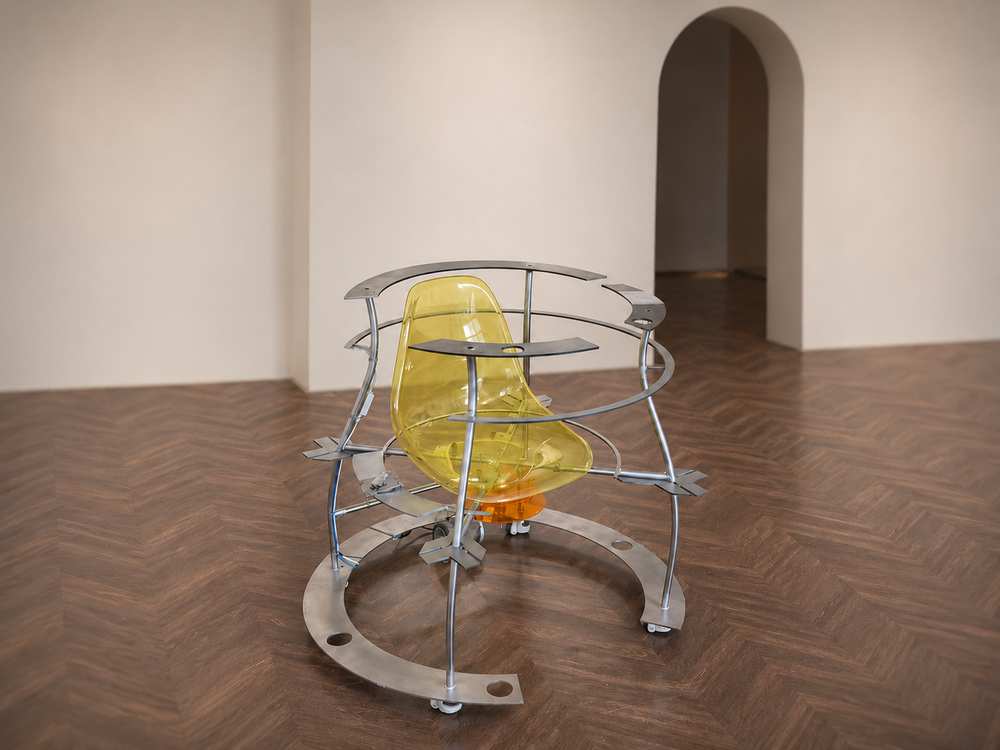
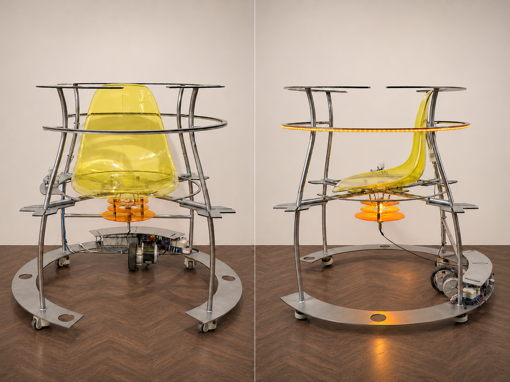
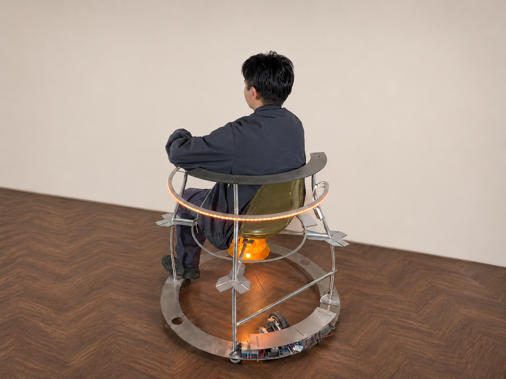

First Step
第一步

一台会突然改变方向的学步车——在被打断的行走里，重新迈出第一步。
该作品基于人工智能将智力转化为可存储能源、革新生产效率，并有望使我们摆脱繁重的体力劳动的趋势，构思了这款未来概念训练机器。它以儿童学步车为灵感载体，却颠覆传统的训练范式。
选择学步机作为原型，是因为行走这一动作，堪称人类活动中最基础、最纯粹的“最小单元”。它既承载着人类探索世界的原始本能，又能够通向无数可能性。作品通过随机干预行进轨迹，将简单位移转化为动态交互，打破行动惯性，促使体验者在不可预知的训练中重新认知身体与空间。
训练中的机器干预将行走塑造成“生存游戏”，迫使使用者在不确定情境中重构行动逻辑。而这种漫无目的的行动，则意味着总能从中期待意外之事，正如柏拉图所言，生活必须得像做游戏，玩玩游戏，献献祭品，唱歌跳舞，如此这般，此人方能取悦众神，方能御敌自卫，方能战场取胜。
A baby walker that swerves without warning: in walking interrupted, we take the first step again.
This work responds to the rise of AI as a force that transforms intelligence into storable energy, reshapes productivity, and may one day free us from physical labor. Inspired by a baby walker, First Step imagines a future training machine that redefines the act of walking.
Walking, as the most basic human movement, carries both instinct and infinite possibility. By introducing random mechanical interventions, the work disrupts linear movement, turning simple locomotion into an unpredictable interaction. Participants must adapt their actions in real time, rethinking their relationship with body and space.
In this state of aimless motion, First Step becomes a kind of survival game—where uncertainty breeds new logic, and surprise becomes part of the journey. As Plato said, life must be lived as play: only through play can we please the gods, defend ourselves, and win the battle.

